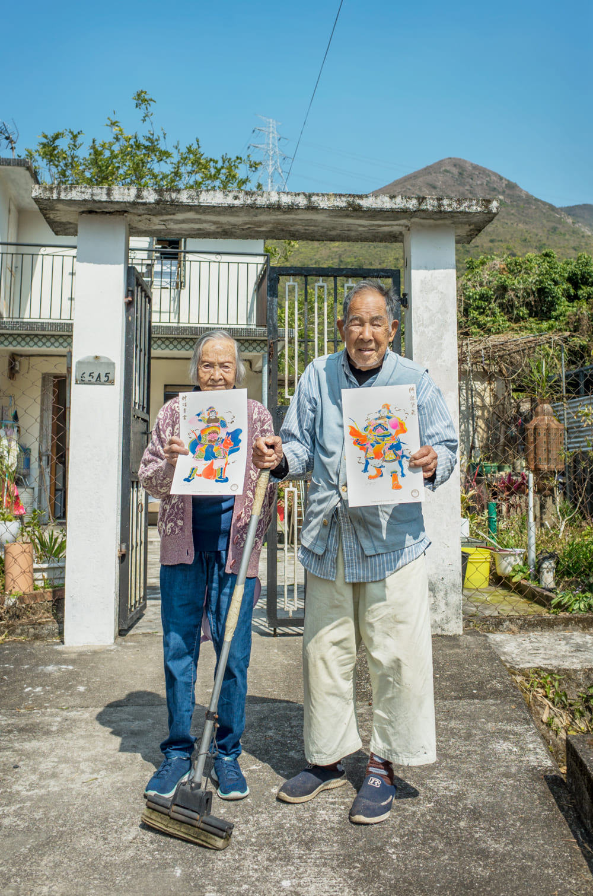
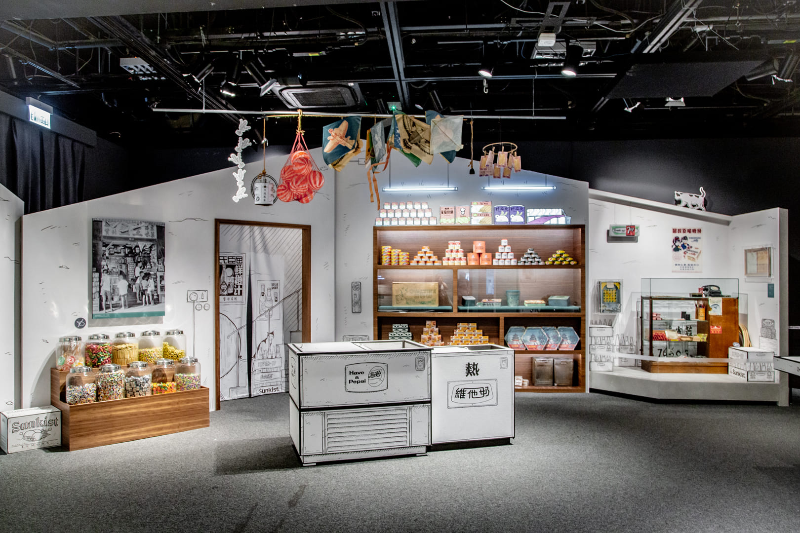
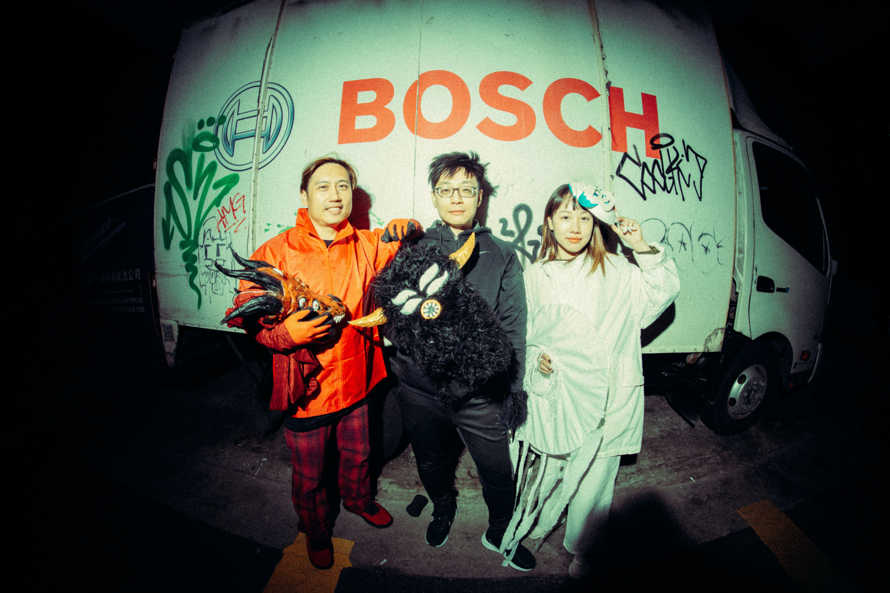
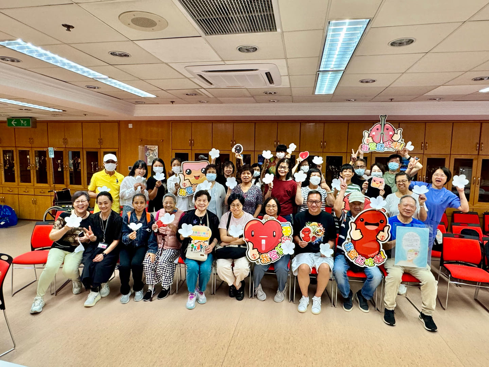

Pris Pong

Hi I'm Pris, and I'm an illustrator and visual curator. I'm an independent artist and I freelance for different projects with corporate companies, museums and schools.
I WANT TO OPEN A CANDY STORE
I was one of those typical kids who loved drawing. In high school, while
everyone was
thinking about studying finance or becoming doctors for secure career paths, my first ambition
was opening a
candy store. [Laughs] It’s very random. I drew drafts of the interior design, thought about how
to market it,
the packaging, and all that stuff made me really happy. All of a sudden, I thought, “What if I
can make money
with my drawings?” It would be cool for drawing to be both my passion and what I earn for a
living.
When I was young, I hoped to have a career like this. It’s not easy to pursue this path, but the people along the way gave me confidence to keep going, even if it’s a small step.
When I was young, I hoped to have a career like this. It’s not easy to pursue this path, but the people along the way gave me confidence to keep going, even if it’s a small step.
BECOMING (FREE)LANCE
Before freelancing, I was at an advertising agency. I was a designer at Bravos doing movie
posters and video editing
for trailers. At that time, the advertising culture was tense. I got off work every
morning at 3 or 4 AM.
It was my first job after graduation and I didn't see my parents for a long time. I didn't even have
a meal with them for
a few months. After 4 months of this schedule, I quit.
The Moonzen Brewery project back in 2018 was a turning point. Back then I didn’t have a job, I stayed home the whole year. I was drawing every day: I wake up, I draw and draw and eat and sleep and draw. I drew one piece about Moonzen [門神], a door guardian in Chinese culture. A friend tagged this piece to Moonzen Brewery on Instagram when I posted it, and that’s how I got my first official illustration freelance job. That’s when I realized, “Oh I can earn money with my own style of illustration.”
Another project I got to work on was for Hong Kong Museum of History’s 2-year temporary
exhibition titled ‘Recreating a Classic:
The Best Features of the Hong Kong Story'. I was responsible for the illustrations; the curating
was already decided by the museum.
I researched old places in Hong Kong, visited a lot of 茶餐廳 [cha chaan teng], and looked at
historical weapons. We used a
black and white stroke style because the space is small, so we
wanted to keep all the essence aligned in one theme of "Hong Kong's story."
It was difficult at the beginning because they didn't allow me to draw on the site. I had to create big drawings digitally, but it had to look like a painting on walls. Every day we did testing, especially on line art styles. It was like boom boom boom, 4 months non-stop, day and night drawing.
Freelance takes discipline. It’s a contrast to what I am naturally because I'm random and
spontaneous. But if you’re your own boss
you can’t be like this, or else you have no money. [Laughs] When you’re freelancing, you’ve got
to get yourself out there and meet people not only for jobs or careers, but to build authentic
connections. What you build before
starting your freelance journey connects everything after.
The Moonzen Brewery project back in 2018 was a turning point. Back then I didn’t have a job, I stayed home the whole year. I was drawing every day: I wake up, I draw and draw and eat and sleep and draw. I drew one piece about Moonzen [門神], a door guardian in Chinese culture. A friend tagged this piece to Moonzen Brewery on Instagram when I posted it, and that’s how I got my first official illustration freelance job. That’s when I realized, “Oh I can earn money with my own style of illustration.”

Pris' grandma and neighbour with Moonzen Brewery Risograph prints
It was difficult at the beginning because they didn't allow me to draw on the site. I had to create big drawings digitally, but it had to look like a painting on walls. Every day we did testing, especially on line art styles. It was like boom boom boom, 4 months non-stop, day and night drawing.

Hong Kong History Museum Exhibition. Design by Pris Pong
THE CRAFTSMANSHIP ARTIST
I never intentionally want to put my style in every work I do. But everything has me in bits of
it - that’s what my clients and
friends told me. There are 2 types of artists: one is bold and only wants their style; the other
is
more like a craftsmanship artist.
I think I'm the craftsmanship artist. I don't want everything to “taste” like me. I want my work tailor-made for each project. It’s one of my passions about art — not having one style that fits all, but generating different styles and creativity in different briefs. I'm not intentionally fitting my style in everything, but my vibes somehow are in the work. Sometimes it annoys me because I want to get rid of that, but it stays there.
I've become friends with one of my favorite local artists in Hong Kong, Terence Choi. He draws yokai and monstrous style works. We had a group exhibition together and he was exhibiting his mountain series. I was happy to meet him as a fan. Since then, we became friends and he invited me to another group show with AYip, and then we had the exhibition about Dante’s Inferno last year.
It was a huge career impact because I started to get to know more about the art world and how to make an independent exhibition. When we were planning how to curate and market the show, they gave me advice and introduced me to friends, which changed my path a lot.
I think I'm the craftsmanship artist. I don't want everything to “taste” like me. I want my work tailor-made for each project. It’s one of my passions about art — not having one style that fits all, but generating different styles and creativity in different briefs. I'm not intentionally fitting my style in everything, but my vibes somehow are in the work. Sometimes it annoys me because I want to get rid of that, but it stays there.
I've become friends with one of my favorite local artists in Hong Kong, Terence Choi. He draws yokai and monstrous style works. We had a group exhibition together and he was exhibiting his mountain series. I was happy to meet him as a fan. Since then, we became friends and he invited me to another group show with AYip, and then we had the exhibition about Dante’s Inferno last year.
It was a huge career impact because I started to get to know more about the art world and how to make an independent exhibition. When we were planning how to curate and market the show, they gave me advice and introduced me to friends, which changed my path a lot.

AYip, Terence, and Pris. Photo by Habi and Zev
SHUT YOUR MIND AND LISTEN
When you have a lot of things in your mind, you want to express it in your own way — first shut your mind
and listen.
Listen to what your clients, your exhibitors are trying to tell you. When you keep their words and ideas in mind rather than trying to force your own, better things can come up. This year, my exhibition with the hospital authority organ donation was the first exhibition to show who the donor families are.
In the past, it wasn’t ethically appropriate to show who the donor families were. But Queen Elizabeth's Hospital changed this insight. They wanted people to know: What is their story? Why did their families want to give their organs to the people in need? I learned to let go of only following my curating vision and created an exhibition together with the donor families, volunteers, and the medical staff.
It was inspiring. When you let go of the process and not hold onto what you want, but initiate the process with
other participants, it makes things better than what one brain can think of. Maybe people who are
experienced always have an ego on things. But along the way, you'll realize it's more of a
barrier.
I love the project because the donor families made origami flowers together, and we’d stack them on the exhibition site. They wrote things in their mind, like their thoughts about their past, families and the thankfulness they have when they receive the donations. It connects the community. It's not only the exhibition, but the process that makes it beautiful.
One last piece of advice I have is pretty cliche, but I’d say you are ready. I always thought that I'm not good enough or I'm not ready yet. But you're never not ready. You're ready any time. So don’t hesitate and don’t doubt yourself. Do what you want.
Everything is ready for you at this moment.
Listen to what your clients, your exhibitors are trying to tell you. When you keep their words and ideas in mind rather than trying to force your own, better things can come up. This year, my exhibition with the hospital authority organ donation was the first exhibition to show who the donor families are.
In the past, it wasn’t ethically appropriate to show who the donor families were. But Queen Elizabeth's Hospital changed this insight. They wanted people to know: What is their story? Why did their families want to give their organs to the people in need? I learned to let go of only following my curating vision and created an exhibition together with the donor families, volunteers, and the medical staff.

'To: Beautiful Donor' Exhibition with donor familiies, volunteers, and medical staff
I love the project because the donor families made origami flowers together, and we’d stack them on the exhibition site. They wrote things in their mind, like their thoughts about their past, families and the thankfulness they have when they receive the donations. It connects the community. It's not only the exhibition, but the process that makes it beautiful.
One last piece of advice I have is pretty cliche, but I’d say you are ready. I always thought that I'm not good enough or I'm not ready yet. But you're never not ready. You're ready any time. So don’t hesitate and don’t doubt yourself. Do what you want.
Everything is ready for you at this moment.

DOOR
3
ARCHIVE
SUBJECT: PRIS PONG
DATE: NOV 2, 2025
Pris was a guest artist at my high school art class. I was going through an artist's block at that time so getting to know her and her journey assured me in the sense that choosing this path was the right one.
It was the first time I actually got to have 1-on-1 conversations with a real freelance artist - it really impacted me because she is quite literally achieving and living the life I've dreamt of.
She's so inspiring in many ways.
DATE: NOV 2, 2025
Pris was a guest artist at my high school art class. I was going through an artist's block at that time so getting to know her and her journey assured me in the sense that choosing this path was the right one.
It was the first time I actually got to have 1-on-1 conversations with a real freelance artist - it really impacted me because she is quite literally achieving and living the life I've dreamt of.
She's so inspiring in many ways.
DON'T GO YET THERE'S MORE TO EXPLORE!